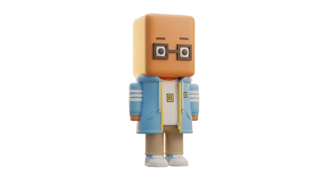
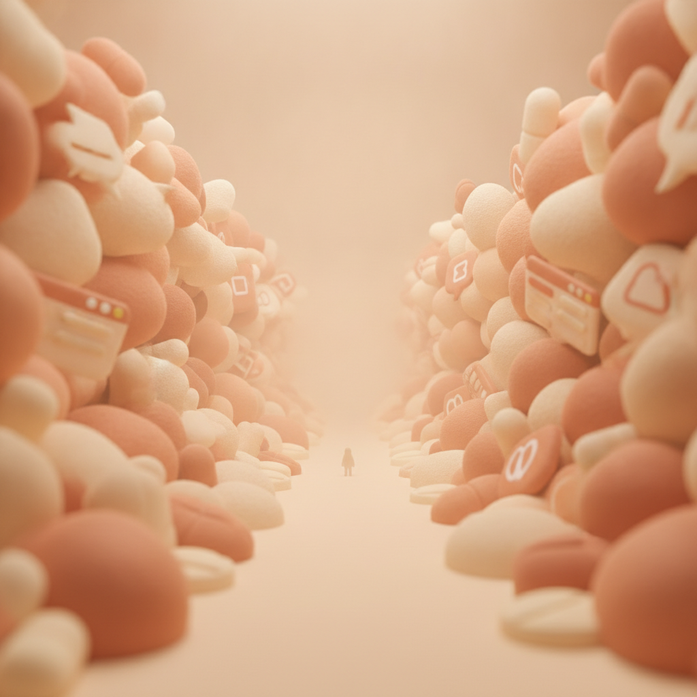
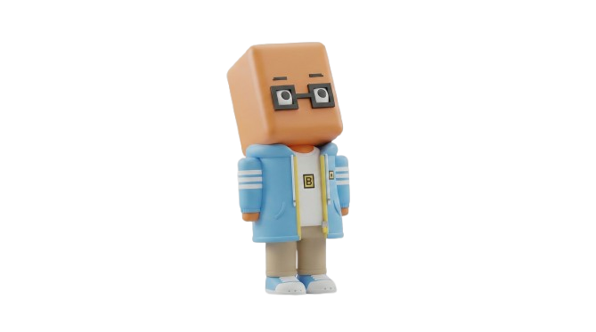
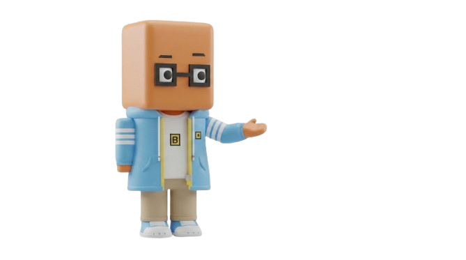
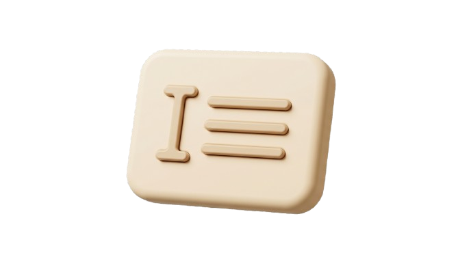
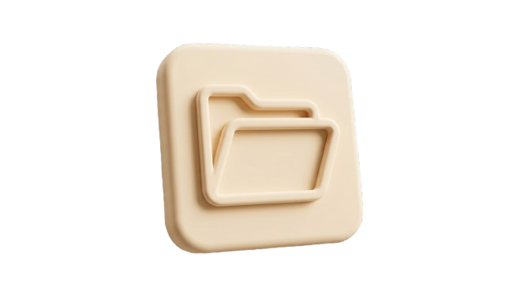
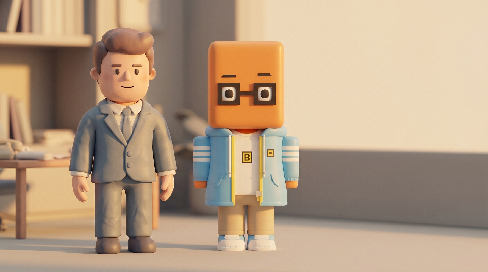

Chatting
Ask for what you need, like you're talking to someone.
malo_ia

// AI doesn't have to be hardA space to learn AI for real — guides, prompts, skills, projects, news, even memes.


02 — the noise
A thousand tools, a thousand promises, a thousand tutorials. Feeling lost is normal.
03 — i've got you
I'll walk you through it calmly, in your words. No weird terms, no pressure.
04 — what you learn
No theory dumps — just the handful of moves that change how you work with AI every day. Swipe through →

Ask for what you need, like you're talking to someone.
Ready-made pieces that teach it specific tasks.

How to ask well so it comes out right the first time.

A place where AI remembers what you're working on.
Step by step, at your pace.
05 — the shift

before afterfresh out